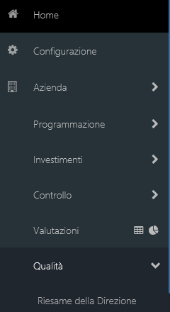
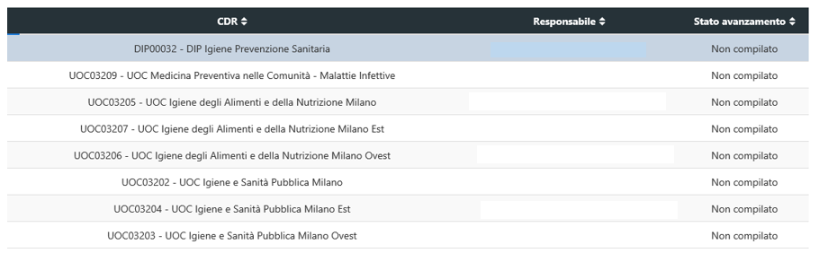
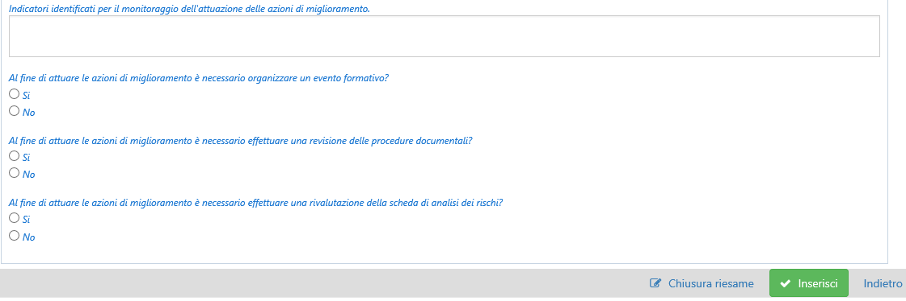

Qualità - Riesame della direzione
Cliccando sulla voce di menù “Riesame della direzione”, presente all’interno della voce “Qualità”, si aprirà la pagina dove sarà possibile visualizzare il questionario, a cura della UOC Qualità e Risk Management, attraverso cui viene valutata l’efficacia del sistema di gestione per la qualità ed eventuali miglioramenti (Fig.1).

La Scheda “Riesame della Direzione” è accessibile da tutti i Responsabili di CDR, i quali avranno a disposizione: a. compilazione, modifica e chiusura del Riesame; b. monitoraggio, mediante un cruscotto di sintesi, dello stato di avanzamento delle attività di predisposizione del Riesame da parte di tutti i CDR afferenti (e del proprio); c. consultazione, direttamente all’interno del cruscotto di sintesi o mediante estrazione excel di tutti i Riesami predisposti dai CDR del proprio ramo gerarchico.
In apertura alla pagina, l’utente abilitato troverà il pulsante con l’estrazione excel e l’introduzione, il cui testo è variabile e definibile dall’amministratore lato DB, a seconda di quanto predefinito (Fig. 2).
Proseguendo, l’utente visualizzerà un cruscotto di sintesi, ovvero una tabella con l’elenco di tutti i CdR afferenti e di quello selezionato, che riporterà il Responsabile e lo stato di avanzamento della compilazione.

Selezionando ciascuna riga del cruscotto ovvero un CdR sarà possibile aprirne il dettaglio, visualizzando tutti campi del questionario. La pagina del questionario si dividerà in sezioni a loro volta suddivise in campi (di testo o flag) relativi a ogni tema affrontato: A) Verifica dell'attuazione delle azioni di miglioramento indicate nel precedente riesame (obiettivi di miglioramento); B) Cambiamenti del contesto interno ed esterno rilevanti per il sgq (Sistema di Gestione per la Qualità); C) Soddisfazione e informazioni di ritorno, inclusi i reclami, da parte del cliente e delle altre parti interessate; D) Rispetto degli obiettivi di dipartimento/uo con particolare riferimento alla scheda di budget, rar, performance; E) Prestazioni dei processi e la conformità dei prodotti/servizi ai requisiti con relativi indicatori; F) Risultati degli audit interni / esterni effettuati ed eventuali valutazioni di enti esterni o parti interessate (iso, enti certificatore, controlli interni, internal auditing, controllo di gestione); G) Stato delle azioni correttive (ac) intraprese a seguito del rilievo di non conformità (nc); H) Valutazione dei dati in seguito ad eventi inattesi significativi; I) Performance dei fornitori esterni; L) Risorse umane; M) Risorse materiali; N) Efficacia azioni intraprese per affrontare i rischi e opportunità (analisi dei rischi). In fondo alla pagina del questionario sarà presente un box con dei pulsanti con cui poter chiudere o inserire il riesame (Fig. 4), a cura sempre a seconda dell’utente scelto. Il Responsabile di Cdr infatti potrà compilare il questionario di diretta responsabilità, altrimenti potrà visualizzare tutti quelli della propria gerarchia in giù.

Amministratore di sistema
Le funzionalità riservate all’amministratore di sistema per questo modulo sono:
- l’estrazione dei contenuti di tutti i Riesami inseriti dai CdR in un unico file excel
- l’introduzione, ad apertura della pagina del Riesame: modificabile solo dall’amministratore, lato DB, ha una relativa validità temporale, definibile tramite anno di introduzione e di termine;
- l’impostazione del questionario tramite DB;
- la riapertura del riesame di un singolo CdR, laddove “erroneamente evasa”.